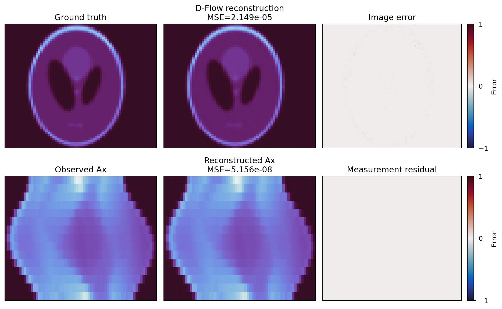
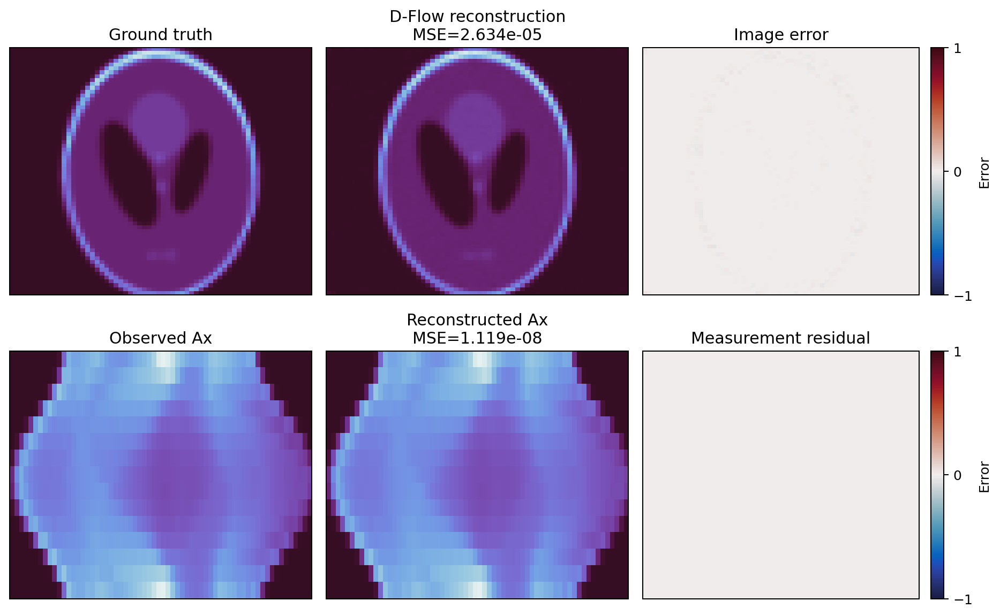
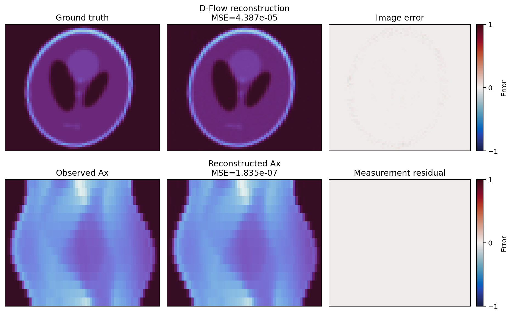
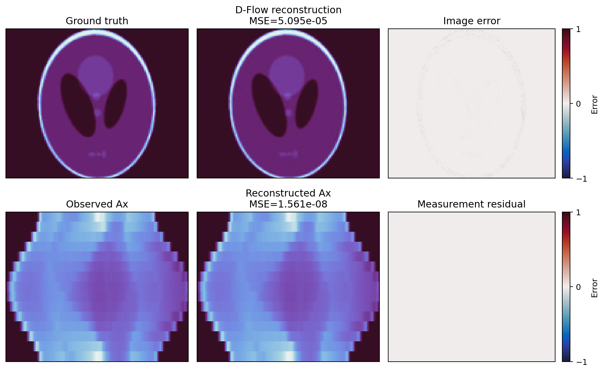
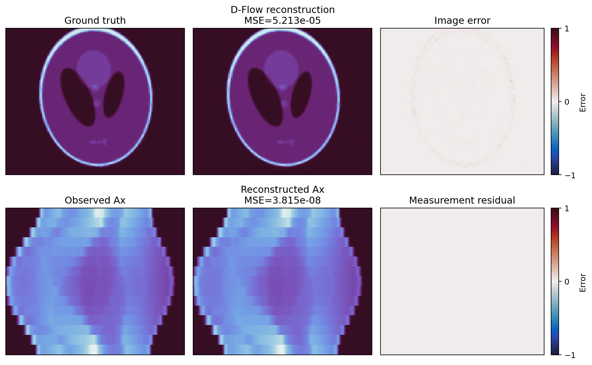
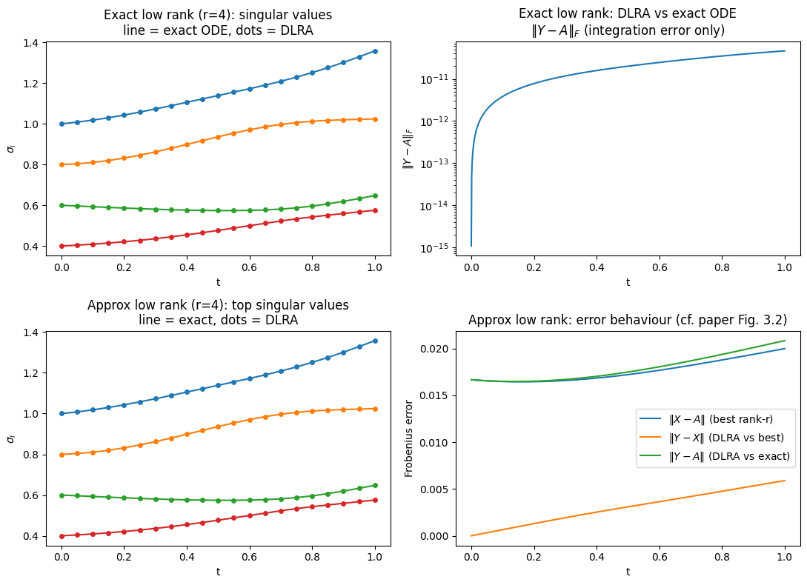

D-Flow and Dynamic Low-Rank Weekly Report
Week of August 5, 2026
Section 1. D-Flow accuracy and runtime on sparse-view CT
Goal
Figures/Tables
Model training and dataset generation
| Resolution | Parameters | Epochs | Optimizer | Learning rate | Batch size |
|---|---|---|---|---|---|
| 64×64 | 2,705,517 | 50 | AdamW | 2×10−4 | 512 |
| 128×128 | 2,705,517 | 50 | AdamW | 2×10−4 | 512 |
The datasets were generated reproducibly from skimage.data.shepp_logan_phantom. Random rotation, axis scaling, translation, gamma, and intensity transforms produced 80,000 training, 10,000 validation, and 10,000 test images per resolution.
Sparse-CT D-Flow experiment
Five held-out samples were reconstructed at each resolution from 15 evenly spaced parallel-beam views. D-Flow used 5 Euler steps, LBFGS learning rate 0.3, max_iter=10, history 100, no line search, no TV regularization, and at most 100 outer steps. The stop target was measurement MSE 1e-12.
| Resolution | Samples | Mean image MSE | Median image MSE | Best image MSE | Worst image MSE | Mean measurement MSE |
|---|---|---|---|---|---|---|
| 64×64 | 5 | 2.910e-05 | 2.634e-05 | 2.149e-05 | 4.387e-05 | 5.869e-08 |
| 128×128 | 5 | 5.508e-05 | 5.213e-05 | 5.095e-05 | 6.663e-05 | 4.728e-08 |
64×64: best, median, and worst by image MSE

Image MSE 2.149e-05; measurement MSE 5.156e-08; sample time 433.5 s.

Image MSE 2.634e-05; measurement MSE 1.119e-08; sample time 302.7 s.

Image MSE 4.387e-05; measurement MSE 1.835e-07; sample time 309.2 s.
128×128: best, median, and worst by image MSE

Image MSE 5.095e-05; measurement MSE 1.561e-08; sample time 241.0 s.

Image MSE 5.213e-05; measurement MSE 3.815e-08; sample time 394.6 s.
Image MSE 6.663e-05; measurement MSE 8.617e-08; sample time 315.4 s.
Observed time per outer iteration
| Resolution | Samples | Mean (s) | Median (s) | Lowest (s) | Highest (s) |
|---|---|---|---|---|---|
| 64×64 | 5 | 3.067 | 3.695 | 0.585 | 5.242 |
| 128×128 | 5 | 3.309 | 5.297 | 0.582 | 5.317 |
Timing used synchronized CUDA wall time on GPU 1. The GPU was already carrying an unrelated workload at launch, so these values measure the observed shared-GPU runtime rather than isolated-device performance.
Outcome
- Mean image MSE: 2.910×10−5 at 64×64 and 5.508×10−5 at 128×128.
- Mean measurement MSE remained below 6×10−8 at both resolutions.
- All ten samples used 100 steps; none reached the 10−12 stop target.
- Median time per outer iteration was 3.695 s at 64×64 and 5.297 s at 128×128.
Conclusion
Section 2. Understanding the July toy-ODE accuracy figure
Goal
Figures/Tables
The complete toy problem
We solve the linear matrix ODE
Its exact dense solution is known:
The matrices L and R are full 40×40 generator matrices. Their skew-symmetric components rotate the singular vectors, while smaller symmetric components change the singular values. Because both matrix exponentials are invertible, they do not change rank: rank(A(t)) = rank(A0) for all time.
Rather than evolving all 1,600 entries of A, DLR evolves the rank-4 factorization Y(t) = U(t)S(t)V(t)T. The derivative LY + YR is projected onto the tangent space of rank-4 matrices. Both experiments use n = 40, rank r = 4, and 800 RK4 time steps.
Why there are two experiments
| Experiment | Initial singular values | Question being tested |
|---|---|---|
| Top row: exactly rank 4 | 1.0, 0.8, 0.6, 0.4; every remaining value is zero | Can DLR reproduce an ODE solution that lies exactly on the rank-4 manifold? |
| Bottom row: approximately rank 4 | 1.0, 0.8, 0.6, 0.4, followed by a nonzero tail starting at 10−2 | How well can a rank-4 DLR solution represent a full-rank ODE solution? |
Three matrices are compared throughout the figure:
| Symbol | Definition | Role |
|---|---|---|
| A(t) | The exact, dense analytic solution | Ground truth |
| X(t) | The best rank-4 approximation of A(t), computed independently by a truncated SVD at each time | Best accuracy any rank-4 representation can attain |
| Y(t) | The rank-4 solution evolved dynamically by DLR | Solver output |

Diagnostics used
| Diagnostic | What was compared | Interpretation |
|---|---|---|
| Exact-rank singular values | The four singular values of exact solution A and DLR solution Y | DLR tracks the evolving singular values of the exactly rank-4 solution. |
| Exact-rank integration error | ‖Y−A‖F | This is the integration-accuracy test; the error is approximately 10−11. |
| Approximate-rank singular values | The four largest singular values of full-rank A and rank-4 Y | DLR tracks the dominant rank-4 structure. |
| Approximate-rank errors | Rank-truncation, DLR-to-best-rank-4, and total errors | These measure the cost of representing a full-rank solution at rank 4, not only integration accuracy. |
Meaning of the three lower-right curves
| Curve | Meaning | Observed behavior |
|---|---|---|
| ‖X−A‖F | Unavoidable rank-truncation error | Starts near 1.7×10−2 because A is full rank but X is restricted to rank 4. |
| ‖Y−X‖F | How far DLR is from the best possible rank-4 approximation | Starts at zero and grows to about 6×10−3. |
| ‖Y−A‖F | Total error of DLR against the full-rank truth | Remains close to the unavoidable ‖X−A‖F curve. |
Numerical summary
| Experiment | True solution rank | max ‖X−A‖/‖A‖ rank-4 limit | max ‖Y−X‖/‖A‖ DLR vs best rank 4 | max ‖Y−A‖/‖A‖ total error |
|---|---|---|---|---|
| Exactly rank 4 | 4 | 6.184e−15 | 2.432e−11 | 2.432e−11 |
| Approximately rank 4 | 40 | 1.134e−2 | 3.088e−3 | 1.134e−2 |
Outcome
- Exact rank-4 integration error: 2.432×10−11.
- The bottom row compares a rank-4 DLR approximation against a rank-40 truth.
- Its approximately 10−2 error comes from rank truncation, not inaccurate integration.
Conclusion
Section 3. CPU runtime: Forward Euler, dense RK4, and DLR
Goal
Figures/Tables
All methods integrated the same exactly rank-4 matrix ODE over t∈[0,1] using 800 steps. The benchmark ran on CPU with one BLAS thread, one warm-up run, and three timed repetitions; the table reports median wall time. Endpoint error was computed against the analytic solution exp(L)A(0)exp(R).
| Matrix size | Rank | Steps | Forward Euler (s) | Dense RK4 (s) | DLR-RK4 (s) | RK4 / DLR | Euler rel. error | RK4 rel. error | DLR rel. error |
|---|---|---|---|---|---|---|---|---|---|
| 40×40 | 4 | 800 | 0.006900 | 0.031495 | 0.117770 | 0.27× | 9.180e-03 | 6.330e-11 | 1.153e-11 |
| 64×64 | 4 | 800 | 0.019184 | 0.083034 | 0.124259 | 0.67× | 8.144e-03 | 5.111e-11 | 7.461e-12 |
| 128×128 | 4 | 800 | 0.151849 | 0.634880 | 0.157395 | 4.03× | 7.490e-03 | 4.506e-11 | 6.783e-12 |
| 256×256 | 4 | 800 | 1.070097 | 4.359125 | 0.273142 | 15.96× | 8.331e-03 | 5.759e-11 | 7.631e-12 |
| 512×512 | 4 | 800 | 8.229879 | 33.766476 | 1.495533 | 22.58× | 8.366e-03 | 5.738e-11 | 7.353e-12 |
Outcome
- Forward Euler was fastest, but its relative error was approximately 10−2.
- Dense RK4 and DLR-RK4 achieved approximately 10−11 relative error.
- DLR was slower at 40×40 and 64×64, then 4.03×, 15.96×, and 22.58× faster than RK4 at 128×128, 256×256, and 512×512.
Conclusion
Sources: outputs/dflow_sparse_ct_shepp_logan/, outputs/fm_unet/shepp-logan-*/, dlra/dlra_toy.ipynb, and dlra/outputs/toy_ode_cpu_benchmark/.